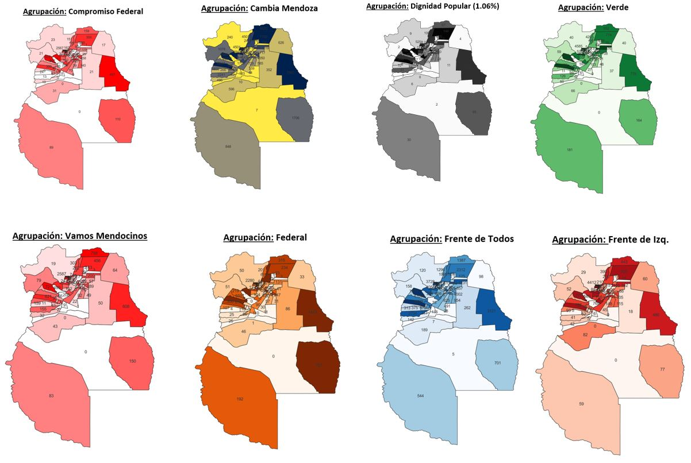
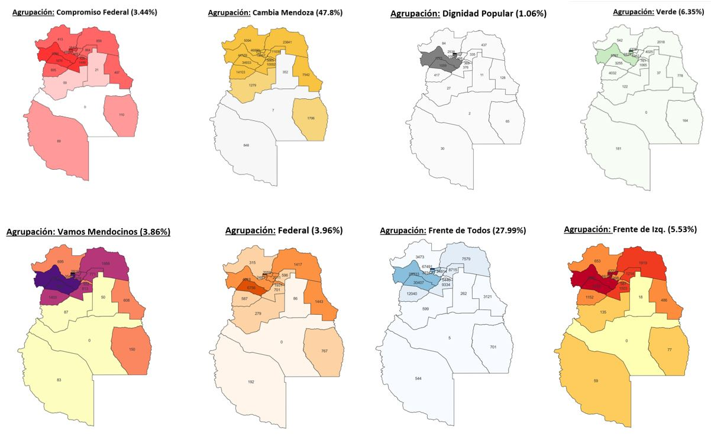

Inicio
Resultados Provisionales PASOS 2021 (Mendoza)
El documento con los detalle de implementación puede consultarse en:
Ir al documento
Se deja una copia de la bd utilizada con los datos para su posterior consulta o implementación. La misma se encuentra dentro de: dump-pasos.sql
Resultados por Circuitos Electorales

Resultados por Departamentos
